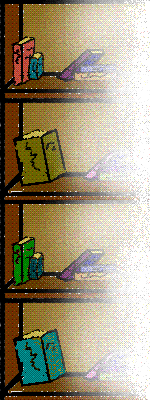
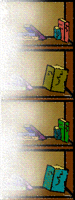

 
Welcome to the Blandings Library (just recently re-catalogued by Miss Halliday). I have been slowly working my way through the complete works of the late, great P.G. Wodehouse. Below are reviews of the books I have read so far.
And alas, because we here at Blandings are not a selfish or greedy lot, we'd be glad to send you any book in our library. Just click on the red book next to each review for the ordering information.
Picadilly Jim ...Click here to order
When Picadilly Jim begins to make headlines, Mrs. Nesta Ford Pett dreads the day when the public will find that she is his aunt. So the Petts zip off to London to beg Jim to come to America and reform. But Jim unknowingly has left for America before they can voice their plea.
With its rapid dialogue and mismatched group of characters, one can only marvel at the imagination which concocted such an abnormal plot. As always, Wodehouse keeps us on the edge of our seats, waiting to see what's around the next corner, and in hysterics when we find out.
Leave it to Psmith ...Click here to order
The Hon. Mr. Walderwick's umbrella is what started it all. Psmith, after having
carefully selected the implement from a varied stock in the Drones Club coatroom,
had brought it to the aid of an attractive young lady who had been suddenly
stranded in the rain. That was the first of several encounters he had with Miss
Halliday, and soon Psmith was convinced that Fate was telling him something.
In a not-so-classic case of mistaken identity, Psmith was willingly led to the
castle where she was recently employed. Spicing the story with poetic thieves,
suspicious secretaries, and lots of "old friends", Wodehouse achieves
a tasteful blend of nonsensical perfection.
Big Money ...Click here to order
What happens when the girl you're in love with is engaged to your best friend? There was really nothing for Berry to worry about- considering his friend was in love with someone else anyway. But money problems soon eclipse the love quadrangle, and the plot thickens into a smoldering mass of fickle fiancées, intoxicated thugs, and a nanny who will make sure that you're wearing your warm woolies. It is another delightful comedy with a classic Wodehouse twist.
Wodehouse Collections!..The delightful tales of the ever-wise Jeeves, and Bertie, his bungling employer for whom Jeeves mind is kept constantly at work devising masterful plans to solve Bertie's unusual problems.
Life With Jeeves:
The Inimitable Jeeves, Very Good Jeeves!, and Right Ho, Jeeves...
Click here to order
To Return to Robinson's Read Aloud Bookstore...Click Here
Questions or Comments About My Page?...E-mail Me!